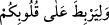

muhâkeme yapamaz hale geldi. “Eğer biz, (vaadimize) inananlardan olması için onun
kalbini pekiştirmemiş olsaydık,” âyetindeki “onun kalbini pekiştirmemiş olsaydık...”
ifâdesi de buna delâlet eder. Çünkü Allah Teâlâ Bedir vak’ası kıssasında “__WORD__ “kalplerinizi birbirine bağlamak için...” (el-Enfâl, 08/11) buyurmuş
ve bununla “__WORD__ “Îmanlarına îman katsınlar diye
kalplerine huzur indiren O’dur.” (el-Feth, 48/4) âyetine işâret etmiştir. Zira ashâb-ı
kiramın o anda kalpleri, şaşkınlık eseri olarak akıl ve idrakten mahrum ve hâlî değildi.
“__WORD__ kelimesi bağlamak, yâni kuvvetli düğüm atmak demektir.
Biz onun “inananlardan” yâni Allah’ın “Biz onu sana iâde edeceğiz” vaadini tasdik
edenlerden “olması için”, ilâhî vaadi (çocuğun kendisine geri verileceğini ve onun
mürsel
peygamberlerden
olacağını)
hatırlatmakla
“onun
kalbini”
sabırla
“pekiştirmemiş olsaydık”, beşer zafiyeti ve aşırı darlanmadan dolayı “neredeyse”
Mûsâ’nın kendi çocuğu olduğu sırrını ifşa edecek ve onu Nil nehrine attığını söyleyip
“işi meydana çıkaracaktı.”
Denilir ki: “__WORD__, “falan şey ortaya çıktı, açıkça görüldü”; “__WORD__ ifâdesi de “onu
ortaya çıkarıp açıkça gösterdi” anlamına gelir.
Keşfü’l-esrâr’da der ki: “__WORD__ deki “__WORD__” harf-i cerri, zâidedir. Yâni “__WORD__ (onu
ortaya çıkaracaktı)” şeklinde anlam verilir. Yâhud da mukadder bir mef’uldür. Bu
durumda takdiri, “__WORD__ şeklindedir ve “Mûsâ sebebiyle (neredeyse) sözü ortaya
çıkaracaktı” anlamına gelir.
Arâisü’l-beyân’da der ki: Firavun’un karısı Âsiye’nin başına gelen Mûsâ’nın
annesinin de başına geldi. Âsiye’nin çocuğun yüzünde gördüğü hak nurlarını Mûsâ’nın
annesi de görüp ona âşık oldu ve onun yüzünü görme şevkinin artmasıyla da kalbinde
sabır kalmadı. Bu şevk, Allah’a duyulan likâ şevki gibidir. Böylece Mûsâ’nın şevki
annesine üstün geldi ve az kalsın “onun kalbini pekiştirmemiş olsaydık, neredeyse işi
meydana çıkaracaktı” yâni sırrını ifşâ edecekti. Ancak biz o kadının bizim vaadimize
inananlardan olmasını lütfettik.
Burada îmânın hak mevhibesi oluşuna bir işâret vardır ki o da önce vahyetmesi sonra
da hatırlatma ile kalbini mevhibe olarak pekiştirmesidir.
11. Annesi Mûsâ’nın ablasına: Onun izini takip et, dedi. O da, onlar farkına
varmadan uzaktan kardeşini gözetledi.
“Annesi Mûsâ’nın ablasına:” “Kızına” ifâdesi yerine “kızkardeşine” buyrulması,
muhabbet ve sevgi medârı olan kardeşliğin önemine dikkat çekmek içindir. Zira emre